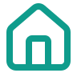

我的（改版后）
我的
张建国
体验版
设置
语音播报
连接、佩戴等节点会念出来
试听语音
先确认手机音量是开着的
修改昵称
张建国
关于
使用说明
关于本程序
v1.0.0
训练记录只保存在这台手机上。卸载小程序会一起清空，不会上传到任何地方。
首页
游戏
我的
蓝牙传感器（改版后）
蓝牙传感器
已连接 · 接收数据中
扫描设备
断开
当前姿态
已减去零点
12.4
°
前后倾
-3.1
°
左右倾
0.8
°
转向
电量
78%
读取
看技术数据
传感器开机后蓝灯快闪。扫不到设备时：确认手机蓝牙已开、传感器有电、安卓还需允许定位权限。模拟器不支持蓝牙，要用真机。
首页
游戏
我的
游戏（改版后）
游戏
选一个开始
5 个游戏都用手上的传感器控制 · 身体动，画面才动
静态保持
站稳、控制住，身体别晃出范围
射击
保持身体在目标范围内瞄准得分
走钢丝
动态平衡，保险绳容错
动态控制
跟着目标移动身体，练重心转移
赛车
前后左右位移驾驶赛车，霓虹赛道
节奏训练
随音乐节拍左右移动，接住落下的音符
接水果
左右倾身移动果篮，把水果接进篮子
训练前先在首页连接传感器并标定零点 —— 不标定，游戏里的判定会一直偏。
首页
游戏
我的
首页 · 未连接
首页
蓝牙传感器
未连接
连接蓝牙传感器
打开传感器电源，蓝灯快闪后点这里
2
零点标定
连接之后
3
开始训练
完成上面两步后
68%
比上周稳了 6 个百分点
一
二
三
四
五
六
日
本周 4 次
查看进步
传感器开机后蓝灯快闪。绑在胸前。每次摘下再戴上都要重新标定 —— 佩戴角度变了，旧零点就不准了。

首页
游戏
我的
我的进步（改版后）
我的进步
68%
↑
比上周稳了 6 个百分点
一
二
三
四
五
六
日
4 / 7 天
各项训练
射击
12 次
74%
+5
节奏训练
9 次
66%
+3
接水果
6 次
61%
+1
走钢丝
3 次
58%
-4
47
次训练 ·
735
分钟
继续训练
稳定率 = 身体待在目标范围内的时长占比，不是游戏分数。难度调高时暂时下降是正常的。